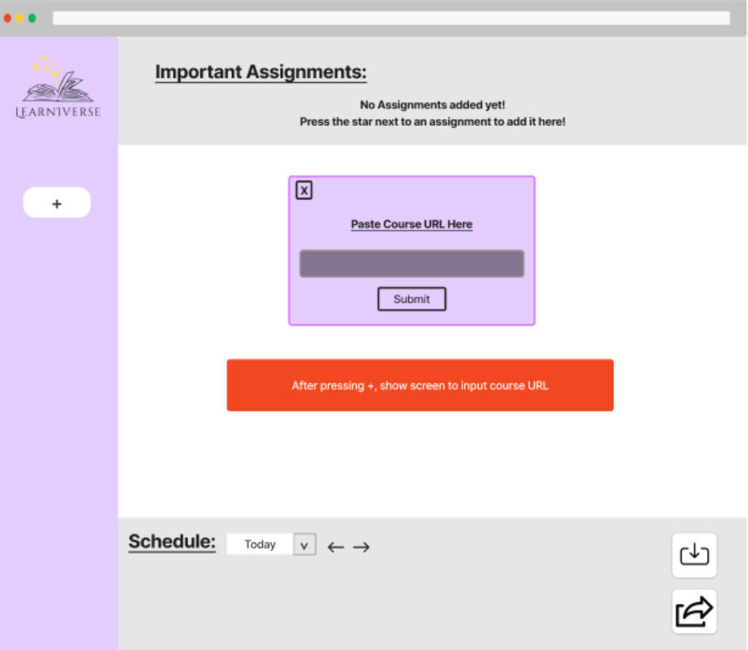

In today’s academic environment, students are increasingly
challenged by the need to manage and track assignments across
multiple digital platforms. This can lead to missed deadlines and
increased stress, particularly for those who may also face accessibility
barriers.
Our design addresses these challenges by providing a unified task
management tool that not only aggregates assignments from various
platforms into a single, user-friendly interface but also enhances
accessibility
The primary goal of our design research was to enhance online learning platforms to better serve college students with learning disabilities. Understanding the unique challenges and needs of this demographic is crucial for developing effective digital learning tools. Our target users included students who frequently engage with these platforms during their coursework, as this is when their interaction with the interface and its features is most critical.
- We performed an interview with an acquaintance who is in the 4th year of their engineering degree. They were clinically diagnosed with ADHD and are currently medicated for it so they can provide firsthand insights into the usability and accessibility of these platforms.
- The participant for this test was a 25-year-old male, a former college student currently residing in Chicago. He was selected specifically because of his recent educational experience, which aligns closely with the target demographic of our prototype. His insights are valuable in understanding how our design could enhance the academic and daily life of college students.
- The participant was an 18-year-old female who is preparing to enter college. She has already gained some college experience through a Running Start program, making her insights particularly valuable for anticipating the needs of future college students. Our goal was to understand what features and functionalities would be most beneficial for her as she transitions to full-time college life.
Research Design Key Insights
Underutilization of Features
Our findings revealed that over half of the features available on platforms like Canvas went unused. This insight emerged from direct observations of a participant navigating the platform, highlighting a significant gap between available resources and their actual application. This underutilization points towards either a lack of awareness about these features or their irrelevance to the students’ needs.
Complexity in Customization
Participants expressed difficulties in customizing the interface to suit their learning styles, such as color-coding calendars and assignment layouts. This issue was particularly evident when a participant attempted to personalize their calendar, but found the process cumbersome and restrictive. The insight underscores the need for more flexible and user-friendly customization options to accommodate diverse learning preferences.
Inadequate Accommodations
The standard accommodations for test-taking, such as extended time, were often not sufficient. Participants noted that if the test design itself is flawed or not tailored for diverse learning needs, simply adding more time does not address the fundamental issues. This was highlighted through participants' feedback on their actual experiences during assessments, indicating a need for more thoughtful and varied accommodation strategies.
Iterative Design Process Overview
Our design process focused on improving and expanding upon the user experience for learning platforms and we came up with six tasks that highlight this goal. Here is each task as follows:
- Being able to export tasks from learning platforms to a user’s personal calendar
- Being able to have more focus on specific tasks
- Having an explanation of new/existing features when starting learning software
- Being able to create a management system within the learning software
- Being able to fill out an unfinished course with placeholder assignments
- Being able to bring various platforms together to make all assignments accessible from one place
These tasks allowed us to have a stronger focus for the next step in the design process which was to create the paper prototype. Our paper prototype design encompasses two primary tasks which were to bring together various platforms to make all assignments accessible from one place and allow users to create more organized and focused learning sessions. Below is our paper prototype of the main webpage that our users see when utilizing Learninverse:
With our paper prototype, we then conducted usability testing with three participants to research how effective the design was at communicating to the user. Seeing how these participants interacted with our designs in person we were then able to deduce revisions that we deemed to address the negative incidents whether it be adding error prompts or adding buttons for better user flow experience. After solidifying our revised design, we then were finally able to design our digital mockup of our Learninverse webpage
Iterative Design Key Insights
Visual Impairment Inclusivity
With our original design, we assumed that our user base did not include individuals with visual impairments and all users would be able to see all the features. To address this oversight and make the tool more accessible, a popup window feature that reads aloud the content displayed on the screen was introduced. The realization of needing this feature emerged during a group meeting where one of us mentioned the possibility of blind users navigating through websites. This then prompted us to make the popup in our digital design.
Improving Visual Indicators
A participant expressed confusion over whether it was possible to list more than one important assignment per website. This issue was crucial as it directly impacts the core functionality of the task management tool, which is to prioritize and organize academic tasks effectively. The interface was revised to include clearer visual indicators that show users how to add multiple important assignments. By making this revision, the prototype became more intuitive, increasing user satisfaction by clearly communicating the available functionalities.
Improving the User-Experience
A participant found it difficult to set up recurring tasks for her weekly study sessions. The process for setting up recurring tasks was improved by simplifying the user interface and adding more intuitive controls, such as dropdown menus with pre-set options for recurrence patterns. This revision is pivotal because recurring tasks are a fundamental feature of productivity tools, especially for students who have regular commitments like classes or study groups. Enhancing this feature improves the prototype’s utility by making it easier for users to organize their academic and personal schedules effectively, thus encouraging continued use of the tool and aiding in better time management.
Resulting Design:
First visit: A prompt for a screen reader will be read out and ask users yes/no for its enabling for the website.
1. Landing Page: When landing and pressing the large + on the main screen, you will be prompted to enter the URL for a course or an entire website to import into Learniverse. Upon invalid URL, you will be asked to re-enter.

2. Dashboard View: Once a URL is added, it will either show the course you added or the website you added in the dashboard. You will also notice a plus in the top right of the box, and upon clicking it, you will be prompted to add an assignment with multiple parameters to allow for placeholder assignments to be created.
3. Multiple Windows: When repeatedly clicking the plus, you can have multiple windows of either courses or websites. For example, you can add Canvas alongside Gradescope as shown in the images below:
4. Schedule Propagation: Notice that added assignments also propagate the schedule at the bottom. When hovering over any assignment, you can see a star appear that is selectable. When selecting it, the assignment will be shown in the important assignments at the top.
5. Import/Export Functionality: You can also see that whenever you hover down in the bottom of our schedule, it allows for import or export to other personal planners to either fill out the schedule on Learniverse more, or to allow for Learniverse info to be added to personal planners.